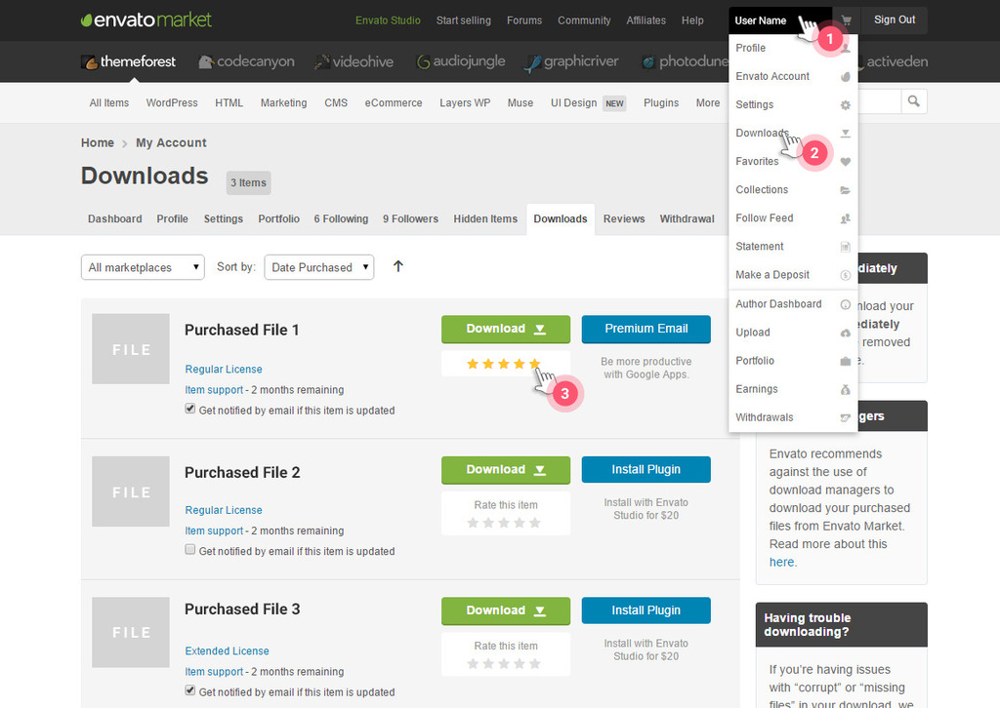

Thank you for purchasing our HTML Template! We hope that you will find all answers to your questions in this Documentation regarding RScard HTML Template. However, if you still need support, please, go to Themeforest profile and use the form to send a message.
We will answer every doubt within our reach.
We will appreciate, if you find a few seconds and rate our template. Many thanks!
Don't know how to rate?
<!-- Styles --> <link rel="stylesheet" type="text/css" href="js/plugins/jquery.bxslider/jquery.bxslider.css"> (1) <link rel="stylesheet" type="text/css" href="js/plugins/jquery.customscroll/jquery.mCustomScrollbar.min.css"> (2) <link rel="stylesheet" type="text/css" href="js/plugins/jquery.mediaelement/mediaelementplayer.min.css"> (3) <link rel="stylesheet" type="text/css" href="js/plugins/jquery.fancybox/jquery.fancybox.css"> (4) <link rel="stylesheet" type="text/css" href="js/plugins/jquery.owlcarousel/owl.carousel.css"> (5) <link rel="stylesheet" type="text/css" href="js/plugins/jquery.owlcarousel/owl.theme.css"> (6) <link rel="stylesheet" type="text/css" href="style.css"> (7) <link rel="stylesheet" type="text/css" href="rtl.css"> (8) <link rel="stylesheet" type="text/css" href="colors/[color].css"> (9)
/**
* Table of Contents:
*
* 1.0 - Reset
* 2.0 - General
* 2.1 - Typography
* 2.2 - Elements
* 2.3 - Helper Classes
* 2.4 - Icons
* 3.0 - Form
* 4.0 - Grid
* 5.0 - WP Editor
* 5.1 - Alignments
* 5.2 - Caption
* 5.3 - Galleries
* 6.0 - Components
* 6.1 - Buttons
* 6.2 - Ripple
* 6.3 - Social
* 6.4 - Pagination
* 6.5 - Custom Scroll
* 6.6 - Video & Audio Player
* 6.7 - Scroll Animations
* 7.0 - Containers
* 8.0 - Preloader/Overlay
* 9.0 - Header
* 9.1 - Logo
* 9.2 - Navigation
* 9.3 - Mobile Navigation
* 9.4 - Header With BgImage
* 9.5 - Header Sticky
* 10.0 - Sidebar
* 10.1 - Sidebar Fixed
* 10.2 - Widgets
* 10.3 - No Sidebar
* 11.0 - Home
* 11.1 - Section Texts
* 11.2 - Section About
* 11.3 - Section Skills
* 11.4 - Section Interests
* 11.5 - Section Portfolio
* 11.6 - Section Timeline
* 11.7 - Section References
* 11.8 - Section Calendar
* 11.9 - Section Contact
* 11.10 - Section Prices
* 11.11 - Section Clients
* 12.0 - Blog
* 12.1 - Blog General
* 12.2 - Blog Post Box
* 12.3 - Post Page
* 12.4 - Post Comments
* 13.0 - Error Page
* 14.0 - Footer
* 15.0 - Theme dark
* 16.0 - Old Browsers
*/
<!-- Google Fonts --> <link rel="stylesheet" type="text/css" href="https://fonts.googleapis.com/css?family=Fredoka+One"> <link rel="stylesheet" type="text/css" href="https://fonts.googleapis.com/css?family=Open+Sans:300,300italic,400,400italic,600,600italic,700,700italic,800,800italic">
<!-- Icon Fonts --> <link rel="stylesheet" type="text/css" href="fonts/map-icons/css/map-icons.min.css"> (1) <link rel="stylesheet" type="text/css" href="fonts/icomoon/style.css"> (2)
<i class="map-icon map-icon-[name]"></i>.
<i class="map-icon map-icon-abseiling"></i> <i class="map-icon map-icon-motobike-trail"></i>
<html lang="en" class="theme-color-33d685">
<head>
...
<link rel="stylesheet" type="text/css" href="style.css">
<link rel="stylesheet" type="text/css" href="colors/green.css">
</head>
...
</html>
THEME COLORS TABLE
| Color | HEX format | CSS File | Color Class |
| Amber | #fec107 | amber.css | theme-color-fec107 |
| Blue | #1a77d4 | blue.css | theme-color-1a77d4 |
| Coral | #e8676b | coral.css | theme-color-e8676b |
| Cyan | #07aaf5 | cyan.css | theme-color-07aaf5 |
| Green | #07cb79 | green.css | theme-color-07cb79 |
| Indigo | #5d6cc1 | indigo.css | theme-color-5d6cc1 |
| Lime | #8dc24c | lime.css | theme-color-8dc24c |
| Orange | #ff9801 | orange.css | theme-color-ff9801 |
| Pale Coral | #ffcfd3 | pale-coral.css | theme-color-ffcfd3 |
| Pale Cyan | #83d5fb | pale-cyan.css | theme-color-83d5fb |
| Pale Green | #a7d9a8 | pale-green.css | theme-color-a7d9a8 |
| Pale Pink | #fbbdd4 | pale-pink.css | theme-color-fbbdd4 |
| Pale Purple | #c7ccea | pale-purple.css | theme-color-c7ccea |
| Pale Red | #d1a3a6 | pale-red.css | theme-color-d1a3a6 |
| Pale Teal | #b4e1dc | pale-teal.css | theme-color-b4e1dc |
| Pale Violet | #e2bfe7 | pale-violet.css | theme-color-e2bfe7 |
| Pink | #ec407a | pink.css | theme-color-ec407a |
| Purple | #673bb7 | purple.css | theme-color-673bb7 |
| Red | #e83b35 | red.css | theme-color-e83b35 |
| Royal Blue | #3f51b5 | royal-blue.css | theme-color-3f51b5 |
| Teal | #27a79a | teal.css | theme-color-27a79a |
| Turquoise | #56c8d2 | turquoise.css | theme-color-56c8d2 |
| Violet | #8e45ae | violet.css | theme-color-8e45ae |
| Yellow | #ffde03 | yellow.css | theme-color-ffde03 |
.theme-color-[custom-color] a,
.theme-color-[custom-color] blockquote:before,
.theme-color-[custom-color] .contact-map .contact-info a:hover,
.theme-color-[custom-color] .interests-list i,
.theme-color-[custom-color] .input-field.used label,
.theme-color-[custom-color] .logo span,
.theme-color-[custom-color] #map .map-icon,
.theme-color-[custom-color] .nav-wrap .btn-mobile-nav,
.theme-color-[custom-color] .page-404 h2 span,
.theme-color-[custom-color] .post-box .post-title a:hover,
.theme-color-[custom-color] .post-single .post-title a:hover,
.theme-color-[custom-color] .post-comments .section-title,
.theme-color-[custom-color] .ref-box .person-speech:before,
.theme-color-[custom-color] .timeline-box .date,
.theme-color-[custom-color] .widget-title,
.theme-color-[custom-color] .widget_meta ul li a:hover,
.theme-color-[custom-color] .widget_archive ul li a:hover,
.theme-color-[custom-color] .widget_nav_menu ul li a:hover,
.theme-color-[custom-color] .widget_categories ul li a:hover,
.theme-color-[custom-color] .widget_recent_entries ul li a:hover,
.theme-color-[custom-color] .widget_recent_comments ul li a:hover,
.theme-color-[custom-color] .widget_search .search-form:before,
.theme-color-[custom-color] .widget-popuplar-posts .post-title a:hover,
.theme-color-[custom-color] .widget-recent-posts .post-title a:hover {
color: #[custom-color];
}
.theme-color-[custom-color] ins,
.theme-color-[custom-color] mark,
.theme-color-[custom-color] .btn-primary,
.theme-color-[custom-color] .btn-primary-outer,
.theme-color-[custom-color] .btn-sidebar-close,
.theme-color-[custom-color] .calendar-busy .calendar-body td .current-day,
.theme-color-[custom-color] .calendar-busy .calendar-today .date,
.theme-color-[custom-color] .filter .active:after,
.theme-color-[custom-color] .filter-bar .filter-bar-line,
.theme-color-[custom-color] .input-field .line:before,
.theme-color-[custom-color] .input-field .line:after,
.theme-color-[custom-color] .mobile-nav,
.theme-color-[custom-color] .nav > ul > li > a > span,
.theme-color-[custom-color] .post-datetime,
.theme-color-[custom-color] .profile-social,
.theme-color-[custom-color] .profile-preword span,
.theme-color-[custom-color] .progress-bar .bar-fill,
.theme-color-[custom-color] .progress-bar .bar-line:after,
.theme-color-[custom-color] .price-box.box-primary .btn,
.theme-color-[custom-color] .price-box.box-primary .price-box-top,
.theme-color-[custom-color] .profile-list .button,
.theme-color-[custom-color] .pagination .page-numbers.current,
.theme-color-[custom-color] .pagination .page-numbers.current:hover,
.theme-color-[custom-color] .pagination .page-numbers:active,
.theme-color-[custom-color] .pagination .page-numbers.next:active,
.theme-color-[custom-color] .pagination .page-numbers.prev:active,
.theme-color-[custom-color] .timeline-bar,
.theme-color-[custom-color] .timeline-box .dot,
.theme-color-[custom-color] .timeline-box-compact .date span,
.theme-color-[custom-color] .widget_tag_cloud a:hover {
background-color: #[custom-color];
}
.theme-color-[custom-color] .mejs-container .mejs-controls .mejs-time-rail .mejs-time-current,
.theme-color-[custom-color] .mejs-container .mejs-controls .mejs-horizontal-volume-slider .mejs-horizontal-volume-current {
background: #[custom-color];
}
.theme-color-[custom-color] .timeline-box-inner,
.theme-color-[custom-color] .price-box.box-primary .btn,
.theme-color-[custom-color] .widget_search .search-form,
.theme-color-[custom-color] .widget_tag_cloud a:hover {
border-color: #[custom-color]; }
.theme-color-[custom-color] .page-404 h2 span:before,
.theme-color-[custom-color] .profile-preword span:before,
.theme-color-[custom-color] .timeline-box-compact .date span:before {
border-left-color: #[custom-color];
}
.theme-color-[custom-color] .price-box.box-primary .price-box-top:before {
border-top-color: #[custom-color];
}
Theme has dark and light skins. To use light skin just add "theme-skin-light" class to the <html> tag, for dark version add "theme-skin-dark".
<html class="theme-skin-light">...</html> <html class="theme-skin-dark">...</html>
So if you want to use the light skin with color scheme then use in the body these clases:
<html class="theme-color-33d685 theme-skin-light">
Libs:
Plugins:
Google Map :
All custom js code is located in site.js.
All script parameters are located in the option.js, you can set parameters as you like.
/** rsCard Options */
var rsOptions = {
rtl: true,
timeline: {
topSpace: 50,
itemsSpace: 25
},
refSlider: {
speed: 800, //Slide transition duration (in ms)
auto: false, //Slides will automatically transition
pause: 6000, //The amount of time (in ms) between each auto transition
autoHover: true, //Auto show will pause when mouse hovers over slider
adaptiveHeight: true, //Dynamically adjust slider height based on each slide's height
adaptiveHeightSpeed: 500 //Slide height transition duration (in ms).
},
postSlider: {
speed: 800, //Slide transition duration (in ms)
auto: true, //Slides will automatically transition
pause: 6000, //The amount of time (in ms) between each auto transition
autoHover: true //Auto show will pause when mouse hovers over slider
},
clientsSlider: {
items: 5,
singleItem: false,
autoPlay: true,
stopOnHover: true,
itemsDesktopSmall: [992, 4],
itemsTabletSmall: [767, 3],
itemsMobile: [320, 1]
},
calendar: {
startYear: '2016',
startMonth: '0', // moths are starting form 0-11
endYear: '2017',
endMonth: '0',
weekStart: 'Sunday', // possible values Sunday/Monday
weekNames: ['Sunday', 'Monday', 'Tuesday', 'Wednesday', 'Thursday', 'Friday', 'Saturday'],
monthNames: ['January', 'February', 'March', 'April', 'May', 'June', 'July', 'August', 'September', 'October', 'November', 'December'],
busyDays: [ // new Date(year, month, day)
new Date(2016, 0, 10),
new Date(2016, 0, 8),
new Date(2016, 0, 12),
new Date(2016, 0, 30)
]
}
};
Our theme is ready for Wordpress theme creation.
We provide css styles for Wordpress editor ( thypography.html ) and all default Wordpress widgets (some of them you can find in sidebar).
$emailTo = "email@sitename.com"; // Enter your email for feedbacks here
<form class="rsForm" action="php/mailsender.php" method="post"> ... </form>
<form class="rsForm" action="recaptcha.php" method="post" data-captcha="true"> ... </form>
STEP2:
You need to have reCAPTCHA API keys. If you do not have keys already then visit https://www.google.com/recaptcha/admin to generate them.
STEP3:
Edit recaptcha.php file and set the respective keys in $siteKey and $secret.
$siteKey = '6LcJex0TAAAAAHonlxP1zkpFBFM3RobWwWNuFr_n'; $secret = '6LcJex0TAAAAAKrf3IE7Tls0HyL814mxEuMKQyhs';
reCAPTCHA supported 40+ languages listed here: https://developers.google.com/recaptcha/docs/language. By default we have used english ( 'en' )
$lang = 'en';
Each portfolio item should have following html structure:
<div class="grid-item [size] [category]">
<div class="grid-box">
<figure class="portfolio-figure">
<img src="http://image_url" alt=""/>
<figcaption class="portfolio-caption">
<div class="portfolio-caption-inner">
<h3 class="portfolio-title">Project Title</h3>
<h4 class="portfolio-cat">Project Category</h4>
<div class="btn-group">
<a class="btn-link" href="http://project_url" target="_blank"><i class="rsicon rsicon-link"></i></a>
<a class="portfolioFancybox btn-zoom" data-fancybox-group="portfolioFancybox[number]" href="#portfolio[number]-inline1"><i class="icon icon-eye"></i></a>
<a class="portfolioFancybox hidden" data-fancybox-group="portfolioFancybox[number]" href="#portfolio[number]-inline2"></a>
<a class="portfolioFancybox hidden" data-fancybox-group="portfolioFancybox[number]" href="#portfolio[number]-inline3"></a>
</div>
</div>
</figcaption>
</figure>
<!-- Start: Portfolio Inline Boxes -->
<div id="portfolio[number]-inline1" class="fancybox-inline-box"> [popup content] </div>
<div id="portfolio[number]-inline2" class="fancybox-inline-box"> [popup content] </div>
<div id="portfolio[number]-inline3" class="fancybox-inline-box"> [popup content] </div>
<!-- End: Portfolio Inline Boxes -->
</div>
</div><!-- .grid-item -->
[size] - we have two predefined sizes for portfolio items, large and small. For large items use size22 class, for small ones use size11 class.
[category] - portfolio category, used for filtering. You can provide more than one class for filtering, for example photography, nature ...
[number] - each portfolio should have uniq number
[popup content] - in general can be any html content, we provide media + title + text. For media you can use image, custom video, iframe (youtube, vimeo, dailymotion ...).
For ajax loading (when click '+' button) add portfolio items in /ajax/portfolio.html file.
Portfolio Content should have following html structure:
<div id="ID" class="fancybox-inline-box">
<div class="inline-embed" ... >...</div>
<div class="inline-cont">
<h2 class="inline-title">Title</h2>
<div class="inline-text">Content</div>
</div>
</div>
We use <div class="inline-embed"></div> element to insert different media (image, iframe, custom video) into popup
<!-- Image -->
<div class="inline-embed" data-embed-type="image" data-embed-url="image.jpg"></div>
<!-- Vimeo -->
<div class="inline-embed" data-embed-type="iframe" data-embed-url="https://player.vimeo.com/video/118244244"></div>
<!-- Dailymotion -->
<div class="inline-embed" data-embed-type="iframe" data-embed-url="https://www.dailymotion.com/embed/video/x314rdy"></div>
<!-- Youtube -->
<div class="inline-embed" data-embed-type="iframe" data-embed-url="https://www.youtube.com/embed/mZb_gat5YCY"></div>
<!-- Custom Video -->
<div class="inline-embed" data-embed-type="video">
<video width="100%" height="100%" poster="img/uploads/media/echo-hereweare.jpg" controls="controls" preload="none">
<source type="video/mp4" src="video_url.mp4" />
<source type="video/webm" src="video_url.webm" />
<source type="video/ogg" src="video_url.ogv" />
</video>
</div>
To set calendar options please open /js/options.js file:
/** rsCard Options */
var rsOptions = {
...
calendar: {
startYear: '2016',
startMonth: '0', // moths are starting form 0-11
endYear: '2017',
endMonth: '0',
weekStart: 'Sunday', // possible values Sunday/Monday
weekNames: ['Sunday', 'Monday', 'Tuesday', 'Wednesday', 'Thursday', 'Friday', 'Saturday'],
monthNames: ['January', 'February', 'March', 'April', 'May', 'June', 'July', 'August', 'September', 'October', 'November', 'December'],
busyDays: [ // new Date(year, month, day)
new Date(2016, 0, 10),
new Date(2016, 0, 8),
new Date(2016, 0, 12),
new Date(2016, 0, 30)
]
}
};
Step-by-step instructions
1) Add a dir and lang attributes to the html tag to set the default base direction and language of your page.
<html lang="ar" dir="rtl"> ... </html>
2) Add rtl.css right after style.css in the all html pages to apply RTL styles.
<link rel="stylesheet" type="text/css" href="style.css"> <link rel="stylesheet" type="text/css" href="rtl.css">
3) Set rtl value from false to true in js/options.js file to applay scripts RTL behavior.
var rsOptions = {
rtl: true,
...
}
